ECG Blog #262 (41a) — Câu chuyện là gì?
Bạn được xem điện tâm đồ 12 chuyển đạo và dải nhịp chuyển đạo II dài trong Hình-1 — nhưng không có bệnh sử kèm theo.
- Điện tâm đồ này kể một "câu chuyện". Nó kể "câu chuyện" GÌ?

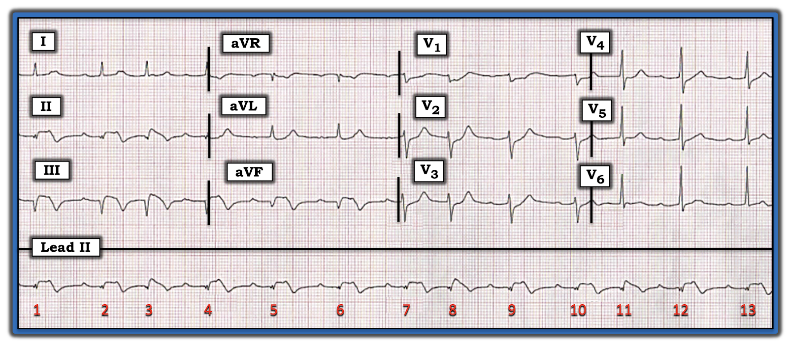
=======================================
LƯU Ý #1: Đến đây, một số độc giả có thể muốn nghe ECG Audio PEARL dài 3:45 phút trước khi đọc Suy nghĩ của tôi về điện tâm đồ trong Hình-1. Bạn có thể xem Suy nghĩ của tôi về bản ghi này vào bất kỳ lúc nào (nằm bên dưới ECG MP-41a).
=======================================

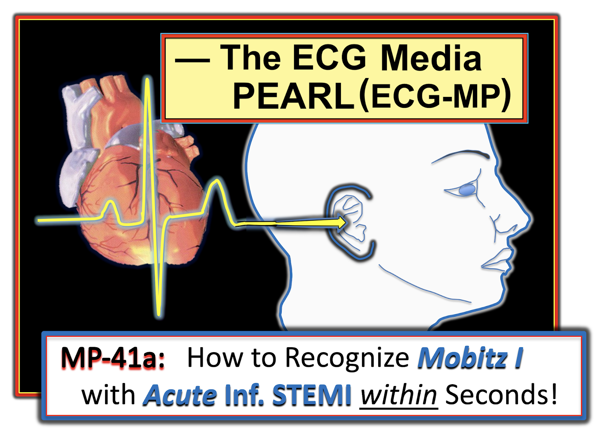
ECG Media PEARL #41a (3:45 phút Audio) hôm nay — Ôn lại CÁCH nhận ra trong vòng vài giây (!) một blốc AV độ 2 Mobitz I ( = Wenckebach AV) xảy ra trong bệnh cảnh STEMI thành dưới đang diễn tiến.
Cách tiếp cận tuần tự CỦA TÔI với điện tâm đồ trong Hình-1:
Có một số dấu hiệu điện tâm đồ quan trọng trong ca này. Mặc dù tôi đã dùng Cách tiếp cận hệ thống (như tôi luôn làm) để phân tích cả nhịp tim lẫn điện tâm đồ 12 chuyển đạo (Xem ECG Blog #185 và Blog #205 để biết chi tiết về cách tiếp cận của tôi) — tôi vẫn cho phép mình "xa xỉ" khoảng 10 giây để nắm bắt các dấu hiệu chính. Điểm CHÍNH: Tổng cộng 10-15 giây là tất cả những gì tôi cần để đi đến chẩn đoán có khả năng nhất:
- Mắt tôi "bị thu hút ngay lập tức" bởi các dấu hiệu rõ ràng của nhồi máu cơ tim thành dưới không rõ thời điểm — nhưng nhiều khả năng mới xảy ra (nếu không muốn nói là cấp) vì: i) Có sóng Q nhồi máu sâu và rộng ở mỗi chuyển đạo thành dưới (II, III, aVF); ii) Vẫn còn ST chênh lên đáng kể ở mỗi chuyển đạo này (đặc biệt khi xét đến việc sóng R ở chính các chuyển đạo thành dưới này hầu như không có biên độ đáng kể); và, iii) Có sóng T đảo ngược sâu, đối xứng ở mỗi chuyển đạo thành dưới.
- Có một số thay đổi sóng ST-T soi gương (reciprocal) ở chuyển đạo aVL (tức là đoạn ST dạng lõm như muỗng múc, nếu không muốn nói là hơi chênh xuống — với sóng T cao không tương xứng so với biên độ nhỏ của sóng R ở aVL) — nhưng những thay đổi soi gương này chỉ ở mức khiêm tốn!
- Ở các chuyển đạo trước ngực — có ST chênh xuống ở các chuyển đạo V1 đến V5, rõ nhất ở chuyển đạo V2 và V3, với nghiệm pháp "Soi gương" (mirror test) dương tính (Xem ECG Blog #246 — bao gồm cả Audio Pearl trong bài đó). Trong bệnh cảnh nhồi máu cơ tim thành dưới mới xảy ra — các dấu hiệu này ở chuyển đạo trước ngực có giá trị chẩn đoán nhồi máu cơ tim thành sau mới xảy ra đi kèm.
Nhìn nhanh dải nhịp chuyển đạo II dài trong Hình-1:
- Theo Cách tiếp cận Ps, Qs & 3R — QRS hẹp — có ít nhất một số sóng P — nhịp không hoàn toàn đều (Regular) (nên Rate (tần số) thay đổi) — nhưng dường như có một "quy luật" trong nhịp (tức là có vài nhóm 2 nhát trông giống nhau — do đó, có nhịp theo nhóm (group beating)!).
- Khoảng PR của tất cả các phức bộ QRS có sóng P đi trước đều giống hệt nhau, dù kéo dài (do đó, ít nhất những sóng P này có liên quan (Related) với các phức bộ QRS kế cận!).
LƯU Ý: Xin nhấn mạnh rằng bạn không cần nhiều hơn 10-20 giây để nhận ra các dấu hiệu điện tâm đồ nêu trên! Những dấu hiệu này gợi ý những điều sau:
- Nhồi máu cơ tim dưới-sau (infero-postero) nhiều khả năng mới xảy ra. Sóng Q sâu cùng sóng T đảo ngược đối xứng ở mỗi chuyển đạo thành dưới — và — ST chênh xuống với sóng T dương ở các chuyển đạo thành trước — trông giống thay đổi sóng T tái tưới máu (reperfusion T waves), gợi ý rằng ổ nhồi máu có thể đã "hoàn tất".
- Tuy vậy — việc ST chênh lên vẫn tồn tại ở mỗi chuyển đạo thành dưới (và ST chênh xuống đáng kể vẫn tồn tại ở chuyển đạo V2 và V3) — gợi ý rằng biến cố tim này có thể vẫn đang diễn tiến. Có lẽ bệnh sử sẽ làm rõ trình tự thời gian của các biến cố.
- ĐIỂM THEN CHỐT (PEARL) #1: Về đánh giá nhịp trong 5-10 giây của tôi — Trong bệnh cảnh STEMI thành dưới mới xảy ra — việc phát hiện nhịp theo nhóm với cùng một khoảng PR kéo dài lặp lại trong suốt bản ghi — thường sẽ hóa ra là kết quả của một dạng Wenckebach (Mobitz loại I, blốc AV độ 2) nào đó.
Để TĂNG TỐC việc Đọc điện tâm đồ của bạn:
Dù việc phân tích điện tâm đồ một cách kỹ lưỡng và có hệ thống là quan trọng — việc áp dụng một số ĐIỂM THEN CHỐT (PEARLS) có thể giúp đẩy nhanh đáng kể việc đánh giá của bạn.
- Để Ngay lập tức Nhận ra Nhồi máu cơ tim thành sau: Hãy tập quen với việc áp dụng nhẩm "Nghiệm pháp Soi gương" (Xem ECG Blog #246). Công cụ trực quan này dựa trên nguyên lý rằng các chuyển đạo thành trước cho một hình ảnh điện tâm đồ "soi gương" đối nghịch với những gì diễn ra ở thành sau thất trái. Để dễ hình dung — tôi đã chèn hình ảnh soi gương của nhát thứ 2 và thứ 3 từ chuyển đạo V2 và V3 vào trong khung viền ĐỎ ở Hình-2. Chẳng phải hình ảnh soi gương này của chuyển đạo V2 và V3 trông giống sóng Q, ST chênh lên và sóng T đảo ngược sâu, đối xứng mà ta thấy ở các chuyển đạo thành dưới trong Hình-2 sao? Hẳn đã rõ — sóng T dương, nhọn ở chuyển đạo V2 và V3 ở bệnh nhân nhồi máu cơ tim dưới-sau mới xảy ra này phù hợp với sóng T tái tưới máu ở vùng phân bố của thành sau.
- Để Ngay lập tức Nghi ngờ Blốc Wenckebach: Mặc dù khó nhận ra, do biên độ QRS ở chuyển đạo II thấp đến bất ngờ — việc chú ý đến quy luật đều đặn của nhịp trong Hình-2 có thể giúp chẩn đoán. Rõ ràng — nhịp trên dải nhịp chuyển đạo II dài có phần không đều. Nhưng như các dấu ngoặc có mũi tên ĐỎ trong Hình-2 cho thấy — rõ ràng có một quy luật lặp lại trong nhịp này. Như ĐIỂM THEN CHỐT #1 (ở trên) — phần lớn các trường hợp khi tôi thấy các nhát xoang với nhịp theo nhóm trong bệnh cảnh nhồi máu thành dưới mới xảy ra — thì có một dạng blốc Wenckebach nào đó.

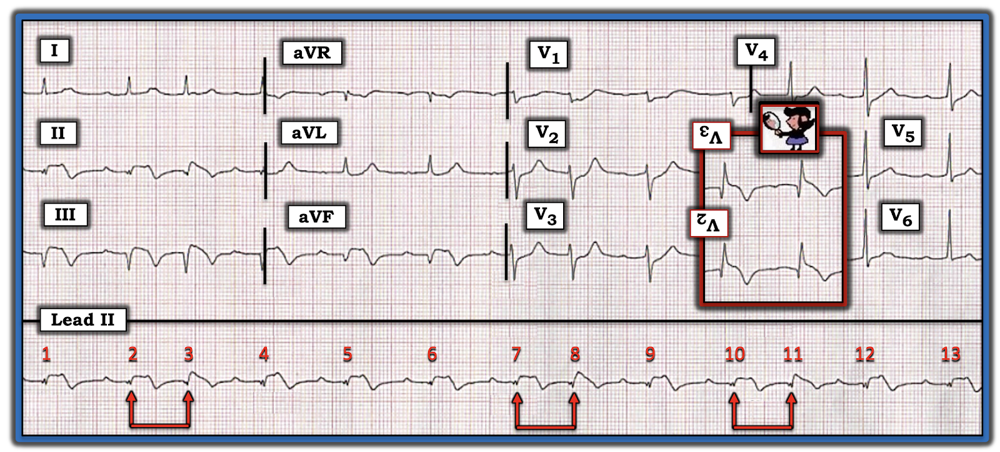
ĐIỂM THEN CHỐT (PEARL) #2: Cần lưu ý Điện thế thấp (low voltage) của phức bộ QRS, đặc biệt ở 6 chuyển đạo chi.
- Điện thế thấp thực sự được định nghĩa là biên độ QRS ≤5 mm ở tất cả chuyển đạo chi. Trong một quần thể không chọn lọc — điện thế thấp thực sự là một dấu hiệu điện tâm đồ tương đối ít gặp. Cũng cần lưu ý — có thể (hoặc không) có cả điện thế thấp (≤10 mm) ở tất cả chuyển đạo trước ngực.
- Chẩn đoán phân biệt của "điện thế thấp" mà nhiều nhân viên y tế thường đưa ra hay chỉ giới hạn ở COPD và/hoặc tràn dịch màng ngoài tim. Như trình bày trong Hình-3 — còn có những bệnh lý khác cần cân nhắc!
- Về mặt kỹ thuật — có thể tranh luận liệu tiêu chuẩn điện thế thấp "thực sự" có được đáp ứng trên điện tâm đồ hôm nay hay không (vì biên độ QRS ở chuyển đạo III có thể hơi vượt quá tiêu chuẩn 5 mm). Dù vậy — biên độ QRS nói chung rõ ràng giảm ở 6 chuyển đạo chi của bản ghi hôm nay (cũng như ở hầu hết các chuyển đạo trước ngực) — vì vậy những chẩn đoán cần cân nhắc liệt kê trong Hình-3 vẫn nên được xem xét.
- Điều đặc biệt đáng lo ngại trong ca hôm nay — là sự thiếu vắng điện thế sóng R đáng kể ở các chuyển đạo thành dưới, cũng như kích thước nhỏ của sóng R ở chuyển đạo I và aVL. Do chúng ta không được cung cấp bất kỳ bệnh sử nào — khả năng nhồi máu diện rộng kèm "choáng váng" cơ tim (myocardial stunning) trở thành những cân nhắc quan trọng.

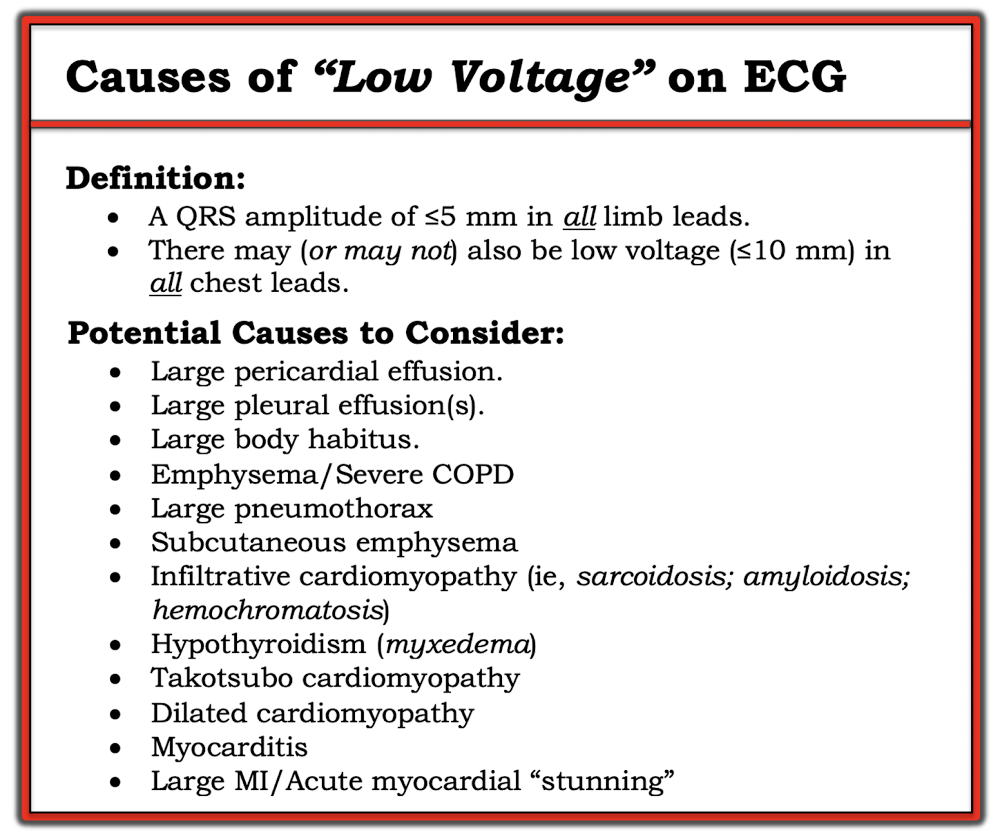
Nhìn KỸ HƠN vào Nhịp tim:
Đến đây tôi muốn chắc chắn hơn về nhịp tim. Bước thứ 1 để làm điều đó là xác định XEM nhịp nhĩ có đều hay không. Tôi bắt đầu bằng cách đánh dấu những sóng P nhìn thấy rõ (mũi tên ĐỎ trong Hình-4).
- Lưu ý rằng khoảng PR trước các nhát #2, 4, 5, 6, 7, 9, 10, 12 và 13 đều như nhau! (tức là khoảng PR đứng trước mỗi nhát này đều là 0.26 giây).
- Việc khoảng PR giống hệt nhau lặp lại cho ta biết rằng mỗi nhát này đều được dẫn truyền (ở đây kèm blốc AV độ 1).

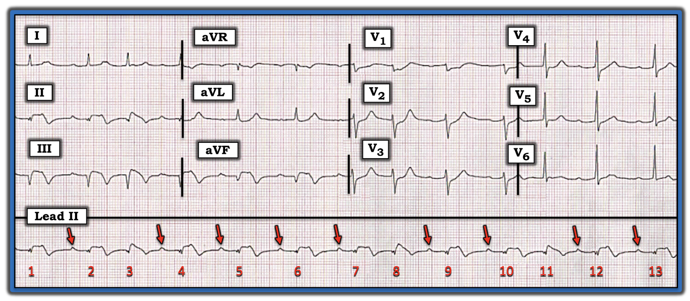
ĐIỂM THEN CHỐT (PEARL) #3: Để có blốc AV độ 2 hoặc độ 3 — nhịp nhĩ phải đều (hoặc ít nhất gần như đều, vì khoảng R-R có thể dao động nhẹ nếu có loạn nhịp xoang nền).
- NẾU đúng như vậy — thì ta nên tìm một sóng P khác ở những vị trí nằm chính giữa 2 mũi tên ĐỎ đứng gần nhau trên dải nhịp chuyển đạo II dài của Hình-4.
- Đặt compa đo (calipers) ở một khoảng P-P đúng bằng một nửa khoảng cách giữa mũi tên ĐỎ thứ 2 và thứ 3 trong Hình-4 — tôi tìm thấy một sóng lệch dương nhỏ "thêm vào" trong sóng T của các nhát #4, 5, 6, 9 và 12 (mũi tên HỒNG trong Hình-5).

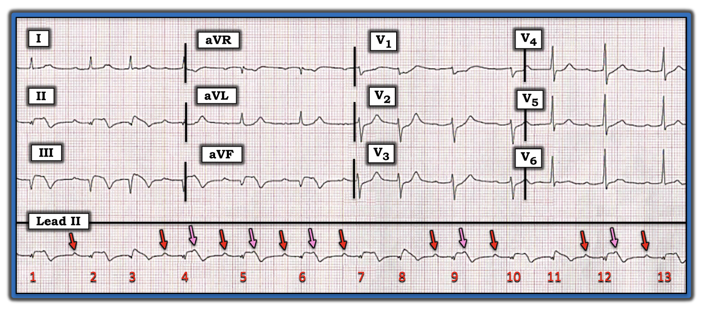
Dựa trên giả thuyết rằng nhịp nhĩ nền trong Hình-5 là đều — tôi tìm thêm các dấu hiệu khác của hoạt động nhĩ.
- Tôi thấy mình có thể "dò bước" được hoạt động nhĩ đều trên toàn bộ dải nhịp chuyển đạo II dài (mũi tên ĐỎ, HỒNG và TÍM trong Hình-6). Lưu ý rằng dưới mỗi mũi tên màu đều có một sóng lệch dương nhỏ "thêm vào", phù hợp với hoạt động nhĩ xuất hiện đều đặn.

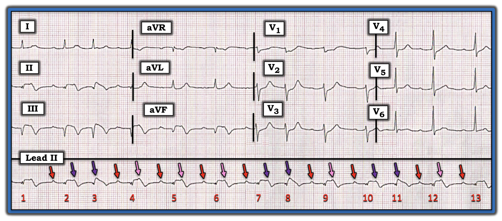
Chỉ một việc đơn giản là đánh dấu sóng P cũng có thể giúp ích vô giá cho việc nhận ra dẫn truyền Wenckebach. Để cho rõ — tôi đã đánh dấu hoạt động nhĩ giả định bằng mũi tên ĐỎ trong Hình-7.
- CÂU HỎI: Giờ đây có dễ hình dung hơn các dấu hiệu dẫn truyền Wenckebach không, đặc biệt với các nhóm 2 nhát trên bản ghi này (tức là bằng cách tìm sự tăng dần của khoảng PR trước các nhát #2,3; trước #7,8; và trước #10,11)?

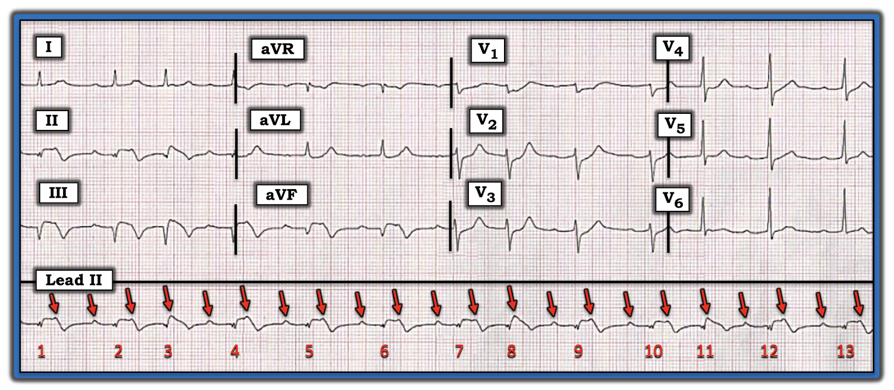
Vẽ GIẢN ĐỒ BẬC THANG (LADDERGRAM):
Giờ đây khi đã xác định có hoạt động nhĩ đều — tôi dùng các Giản đồ bậc thang tuần tự trong 5 Hình tiếp theo để minh họa cơ chế của nhịp trong ca hôm nay:
- Như thường lệ — tôi bắt đầu giản đồ bậc thang trong Hình-8 bằng cách vẽ các vạch dọc ĐỎ ở Tầng Nhĩ, ngay dưới các mũi tên ĐỎ trên dải nhịp, để biểu diễn theo sơ đồ sự xuất hiện đều đặn của sóng P (ở đây với tần số nhanh 130-135/phút). Các mũi tên XANH dày hơn ở đầu bản ghi cho thấy mỗi vạch ở Tầng Nhĩ được vẽ chính xác dưới sóng P tương ứng trên dải nhịp chuyển đạo II dài.
- Tiếp theo tôi vẽ các mũi tên ở Tầng Thất, biểu thị các nhát trên thất được dẫn truyền cho mỗi phức bộ trong 13 phức bộ QRS trên bản ghi này (Hình-9). Các mũi tên XANH dày hơn ở đầu bản ghi cho thấy mỗi nhát ở Tầng Thất được vẽ chính xác dưới phức bộ QRS tương ứng trên dải nhịp chuyển đạo II dài.
- Bây giờ là lúc giải giản đồ bậc thang. Tôi làm điều này bằng cách trước hết nối các xung động nhĩ (ở đáy Tầng Nhĩ) — với những mũi tên đỏ ở đỉnh Tầng Thất mà tôi biết chắc chắn phải được dẫn truyền (Đây là tất cả các nhát có khoảng PR giống hệt nhau đi trước — như thể hiện trong Hình-10 bằng các đường chéo XANH trong Tầng Nút AV).
- Tôi tiếp tục giải giản đồ bậc thang — bằng cách tập trung vào từng nhóm nhát, và nối các xung động nhĩ (ở đáy Tầng Nhĩ) — với những mũi tên đỏ ở đỉnh Tầng Thất mà hợp lý nhất là sẽ được dẫn truyền (như thể hiện trong Hình-11 bằng đường chéo XANH và 2 đầu cụt (butt ends) vẽ trong Tầng Nút AV gần đầu bản ghi).
- Giản đồ bậc thang hoàn chỉnh của tôi được trình bày trong Hình-12. Nhịp là nhịp nhanh xoang (hoặc nhịp nhanh nhĩ) với tần số ~130/phút. Có dẫn truyền Wenckebach với ưu thế dẫn truyền AV 2:1 — và 3 nhóm 2 nhát cho thấy dẫn truyền AV 3:2 (ở các nhát #2,3; 7,8; và 10,11).

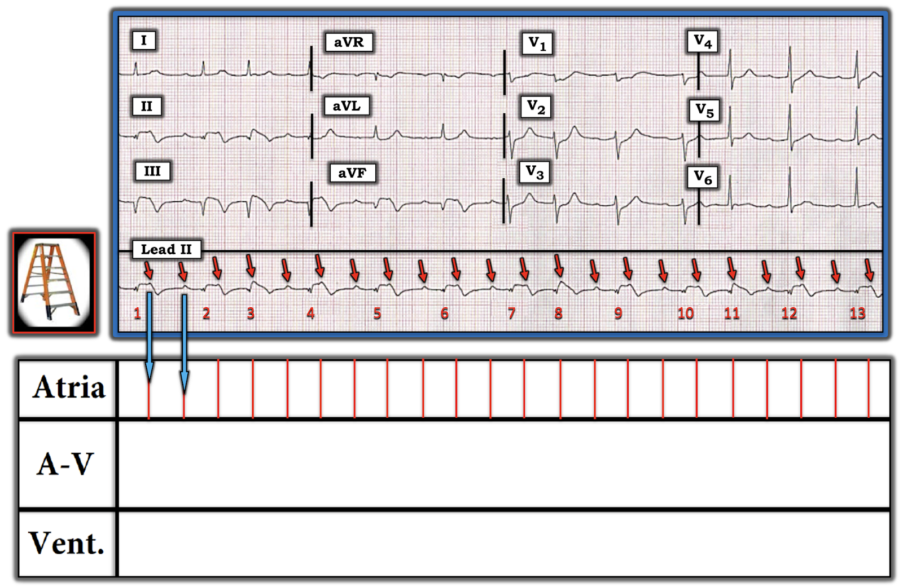

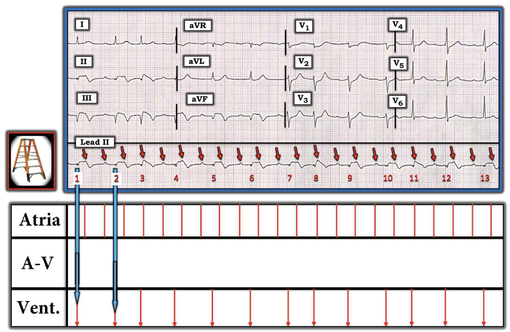

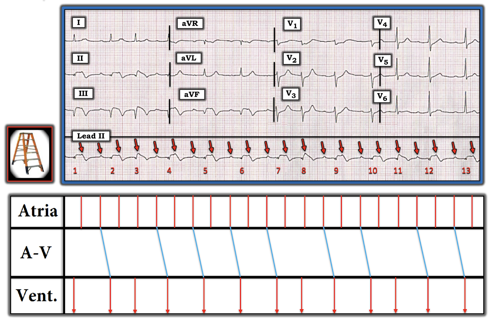

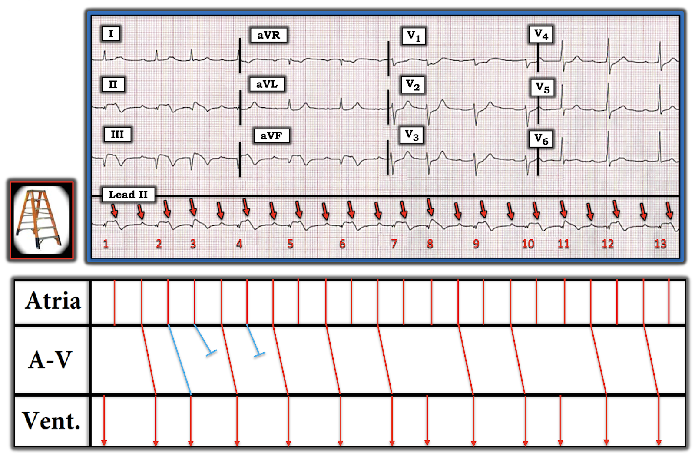

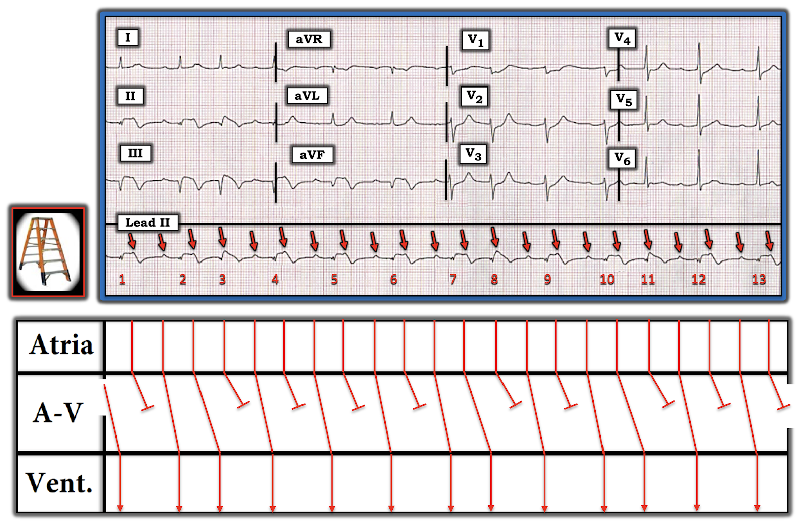
==================================
"Câu chuyện" mà Điện tâm đồ hôm nay Kể lại?
Ca hôm nay được trình bày dưới dạng điện tâm đồ 12 chuyển đạo và dải nhịp chuyển đạo II dài trong Hình-1, không kèm bất kỳ bệnh sử nào.
- Điện tâm đồ 12 chuyển đạo cho thấy đã xảy ra nhồi máu cơ tim dưới-sau không rõ thời điểm, nhưng có lẽ mới xảy ra. Sóng Q thành dưới rất sâu + sóng T tái tưới máu ở các chuyển đạo thành dưới và thành trước gợi ý rằng nhồi máu này có lẽ đã khởi phát hơn vài giờ — mặc dù ST chênh lên kéo dài ở thành dưới và ST chênh xuống ở thành trước cho thấy biến cố có thể vẫn đang diễn tiến.
- Nhịp nền là nhịp nhanh nhĩ (hoặc nhịp nhanh xoang), với nhịp theo nhóm do dẫn truyền Wenckebach.
- Blốc AV độ 2, Mobitz loại I (tức là Wenckebach AV) — là tình trạng thường đi kèm nhồi máu thành dưới cấp hoặc mới xảy ra. Phần lớn các trường hợp, rối loạn dẫn truyền này không cần tạo nhịp tim.
- Điện thế thấp, sóng Q thành dưới chiếm ưu thế (với biên độ sóng R không đáng kể ở các chuyển đạo này), và tần số nhĩ nhanh đều làm dấy lên lo ngại về khả năng mất bù tim.
==================================
Lời cảm ơn: Tôi xin cảm ơn Kianseng Ng (từ Malaysia) đã giới thiệu ca này cho tôi và cho phép tôi sử dụng bản ghi này.
==================================
Các bài ECG Blog liên quan đến Ca hôm nay:
- ECG Blog #185 — Sử dụng Cách tiếp cận hệ thống trong phân tích nhịp.
- ECG Blog #205 — Ôn lại Cách tiếp cận hệ thống của tôi trong đọc điện tâm đồ 12 chuyển đạo.
- ECG Blog #246 — Ôn lại cách dùng "Nghiệm pháp soi gương" (Mirror Test) để chẩn đoán nhồi máu cơ tim thành sau cấp.
- ECG Blog #258 — Ôn lại CÁCH "Định tuổi" một ổ nhồi máu.
- ECG Blog #184 — Ôn lại mối quan hệ soi gương đối nghịch "kỳ diệu" khi có thiếu máu cục bộ cấp giữa chuyển đạo III và chuyển đạo aVL.
- ECG Blog #55 — Nhồi máu cơ tim thành dưới cấp + Wenckebach AV.
- ECG Blog #154 — Nhồi máu cơ tim thành dưới cấp + Wenckebach AV.
- ECG Blog #168 — Nhồi máu cơ tim thành dưới cấp + blốc Wenckebach (hai tầng).
- ECG Blog #224 — Nhồi máu cơ tim thành dưới cấp + Wenckebach AV.
- ECG Blog #188 — Cách đọc (và vẽ) Giản đồ bậc thang.
- Bài đăng ngày 24 tháng 1 năm 2020 trên Dr. Smith's ECG Blog — Ôn lại một ca trong đó Điện thế thấp (với biên độ QRS giảm dần trên các điện tâm đồ liên tiếp) là do choáng váng cơ tim (Xem Bình luận của tôi ở cuối trang).
- Bài đăng ngày 12 tháng 11 năm 2020 trên Dr. Smith's ECG Blog — Ôn lại một ca trong đó Điện thế thấp được ghi nhận ở một bệnh nhân Covid-19 kèm sốc tim (Xem Bình luận của tôi ở cuối trang).